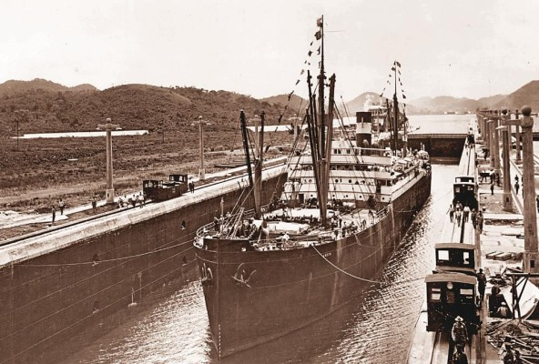
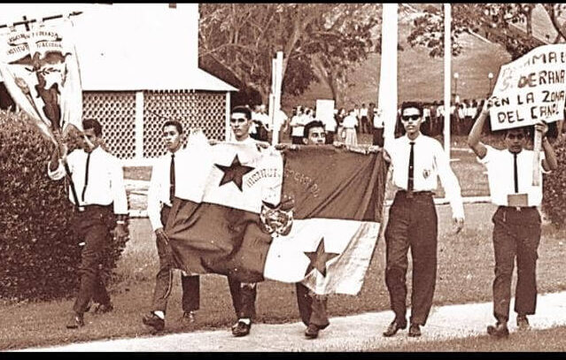
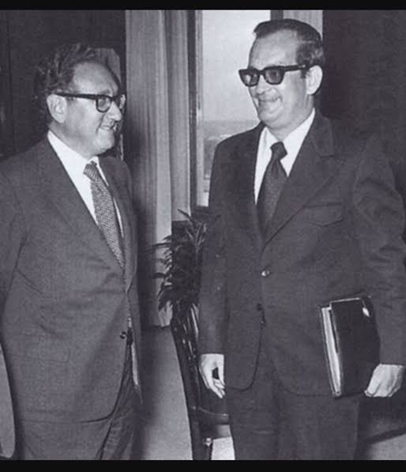
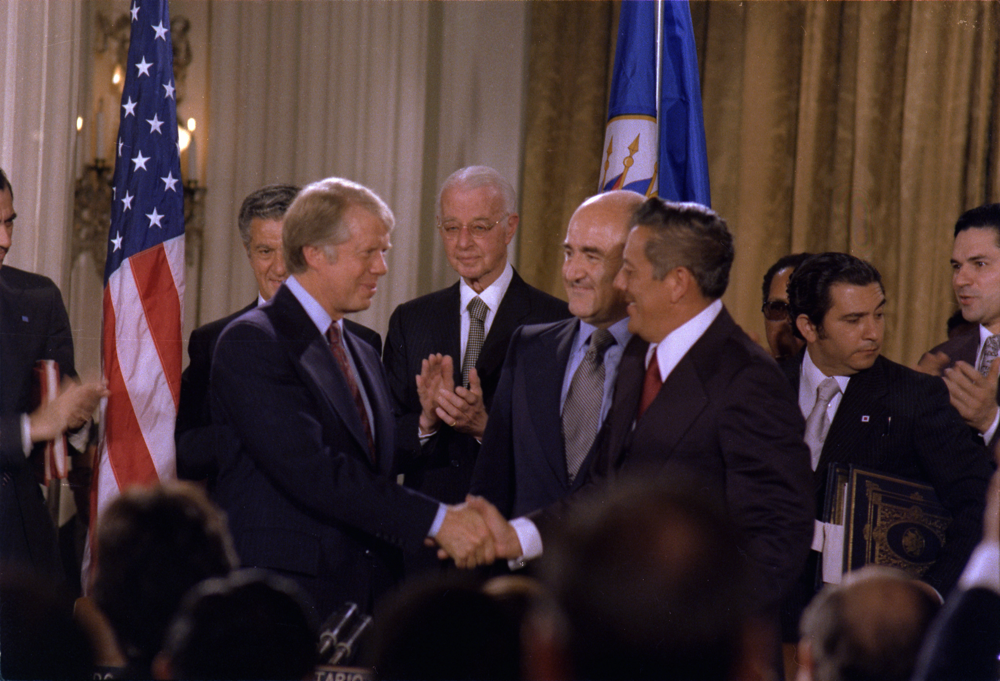
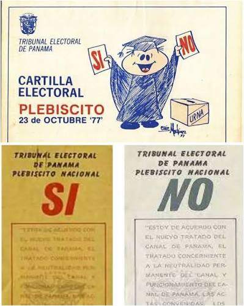
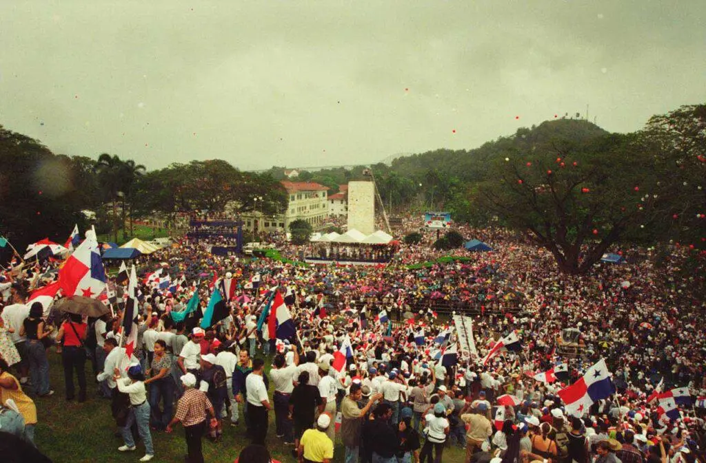
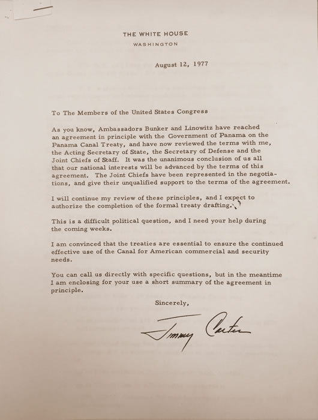

1. Contexto Histórico
El Canal de Panamá fue construido por Estados Unidos entre 1904 y 1914. Mediante el Tratado Hay-Bunau-Varilla de 1903, Estados Unidos obtuvo el control perpetuo de una franja de 10 millas de ancho conocida como la Zona del Canal, además del derecho a intervenir en los asuntos internos de Panamá.
Durante décadas, la presencia estadounidense en territorio panameño generó tensiones. Los panameños veían la Zona del Canal como un enclave colonial, con sus propias leyes, escuelas y sistemas de justicia, ajenos a la soberanía nacional.
Antecedentes del Canal

Imagen 1.1: Inicios de la construcción del canal de Panamá.
El Incidente de la Bandera (9 de enero de 1964)
Estudiantes panameños intentaron izar la bandera de Panamá junto a la de Estados Unidos en la Escuela Secundaria de Balboa, dentro de la Zona del Canal. La negativa y la violencia posterior dejaron 21 panameños y 4 soldados estadounidenses muertos. Este hecho marcó un antes y un después en la relación bilateral y llevó a Panamá a romper relaciones diplomáticas con Estados Unidos.
La bandera de Panamá debe ondear en la Zona del Canal. No pedimos un favor, exigimos un derecho. — Sentimiento nacional panameño tras 1964
Acontecimientos del 9 de enero de 1964

Imagen 1.2: Estudiantes panameños del Instituto Nacional de Panamá.
Intentos previos de negociación
En 1967 se firmaron los Tratados Robles-Johnson, que buscaban reemplazar el tratado de 1903, pero nunca fueron ratificados por ninguno de los dos países. En 1973, Panamá llevó el caso ante la ONU, donde obtuvo el apoyo de la mayoría de los países para una resolución que instaba a Estados Unidos a negociar un nuevo tratado.
2. La Negociación (1974 – 1977)
En 1974, el secretario de Estado estadounidense Henry Kissinger, y el canciller panameño Juan Antonio Tack firmaron un acuerdo de ocho principios que serviría como base para las negociaciones. Entre ellos se reconocía la soberanía panameña sobre la Zona del Canal y se establecía un plazo para la transferencia.
Las negociaciones formales comenzaron en 1975 y se extendieron por más de dos años. Los principales puntos de discusión fueron:
- La duración del tratado y la fecha de transferencia del Canal.
- La neutralidad permanente del Canal y el derecho de Estados Unidos a defenderlo.
- La presencia militar estadounidense durante el periodo de transición.
- La jurisdicción y las tierras de la antigua Zona del Canal.
Autores de la Negociación

Imagen 2.1: Reunión entre el secretario de Estado estadounidense, Henry Kissinger, y el canciller panameño, Juan Antonio Tack.
Los negociadores principales fueron Ellsworth Bunker y Sol Linowitz por Estados Unidos, y Rómulo Escobar Bethancourt y Nicolás González Revilla por Panamá. El general Omar Torrijos Herrera, líder de facto de Panamá, jugó un papel decisivo al mantener la presión política y diplomática.
No queremos que el Canal sea panameño solo en el papel. Lo queremos con todas sus consecuencias. — Omar Torrijos Herrera
3. La Firma del Tratado (7 de septiembre de 1977)
El 7 de septiembre de 1977, en la sede de la Organización de los Estados Americanos (OEA) en Washington D.C., se firmaron dos documentos:
- El Tratado Torrijos-Carter: establecía la transferencia gradual del Canal a Panamá y su devolución total el 31 de diciembre de 1999.
- El Tratado de Neutralidad Permanente: garantizaba que el Canal permaneciera neutral y abierto al tránsito de todas las naciones, incluso en tiempos de guerra.
La firma del tratado

Imagen 3.1: Ceremonia de la firma de los Tratados Torrijos-Carter en Washington D.C., 7 de septiembre de 1977.
La ceremonia contó con la presencia de Omar Torrijos (líder militar de Panamá) y Jimmy Carter (presidente de Estados Unidos), además de líderes de 27 países del hemisferio. Fue un momento histórico para Panamá, que veía cumplido un anhelo de décadas.
Una línea de tiempo de los hechos clave
4. Ratificación y Entrada en Vigor (1978 – 1979)
Tras la firma, los tratados debían ser ratificados por los órganos legislativos de ambos países. En Panamá, la población fue consultada mediante un referendo el 23 de octubre de 1977, donde el 66.1% de los votos aprobó los tratados.
El referendo panameño

Imagen 4.1: Ciudadanos panameños votando en el referendo de 1977 sobre los tratados del Canal.
En Estados Unidos, el proceso fue más complejo. El Senado estadounidense debatió los tratados durante meses, con fuerte oposición de sectores conservadores. Finalmente, el 16 de marzo de 1978 se ratificó el Tratado de Neutralidad, y el 18 de abril de 1978 se ratificó el Tratado del Canal, con enmiendas que otorgaban a Estados Unidos el derecho de intervenir militarmente para mantener la neutralidad.
Los tratados entraron en vigor el 1 de octubre de 1979, dando inicio a un periodo de transición de 20 años.
5. Legado e Impacto
Los Tratados Torrijos-Carter representaron la victoria diplomática más importante de Panamá en el siglo XX. No solo devolvieron el Canal al país, sino que restauraron la dignidad nacional y afirmaron la soberanía sobre todo el territorio.
La transferencia del Canal

Imagen 5.1: Ceremonia de la transferencia del Canal de Panamá el 31 de diciembre de 1999.
El 31 de diciembre de 1999, a las 12:00 del mediodía, Panamá asumió el control total del Canal. Desde entonces, la Autoridad del Canal de Panamá (ACP) administra la vía interoceánica, y su ampliación en 2016 ha consolidado al país como un hub logístico global.
El Canal es de Panamá y para el mundo. Hoy somos dueños de nuestro destino. — Discurso oficial del 31 de diciembre de 1999
El legado de Torrijos y Carter trasciende lo bilateral: demostró que la diplomacia, la presión internacional y la unidad nacional pueden revertir injusticias históricas.
6. Videos del Equipo
Como parte del proyecto, cada integrante elaboró un video explicando un aspecto clave del proceso. A continuación se presentan los cuatro videos.
Contexto y antecedentes (1964 – 1973)
La negociación (1974 – 1977)
La firma y ratificación (1977 – 1979)
Legado e importancia actual
7. Nuestro Equipo
Cuatro estudiantes, cuatro perspectivas, un mismo objetivo: comprender y difundir la historia de los Tratados Torrijos-Carter.
8. Bibliografía y Fuentes
Fuentes documentales

Imagen 8.1: Texto original de los Tratados Torrijos-Carter de 1977.
- Autoridad del Canal de Panamá. (2023). Historia del Canal de Panamá. https://pancanal.com
- Carter, J. (1977). Discurso sobre los Tratados del Canal. Organización de los Estados Americanos, Washington D.C.
- Conte-Porras, J. (2000). Los Tratados Torrijos-Carter: La lucha por la soberanía. Editorial Universitaria.
- Lafeber, W. (1978). The Panama Canal: The Crisis in Historical Perspective. Oxford University Press.
- Ministerio de Relaciones Exteriores de Panamá. (1977). Textos de los Tratados Torrijos-Carter.
- Torrijos, O. (1977). Discursos y declaraciones sobre el Canal. Biblioteca Nacional de Panamá.
La historia no la escriben los que esperan, sino los que se atreven a luchar por lo que creen justo.